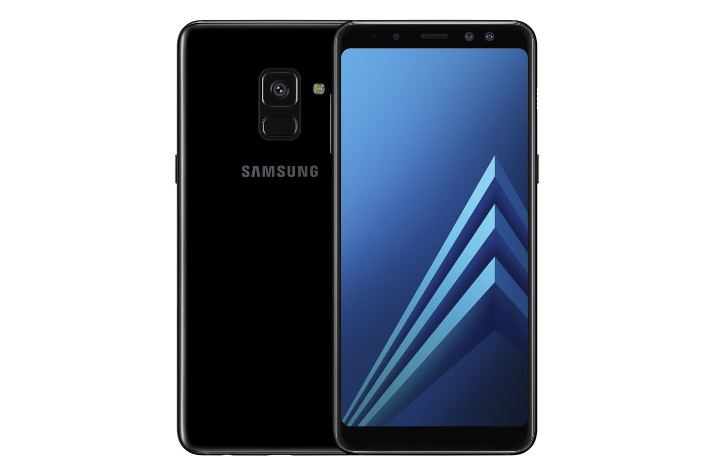

Samsung mobile
Seria Samsung Galaxy A (czyli Alpha) to linia smartfonów z systemem Android klasy średniej produkowanych przez Samsung Electronics. Seria Galaxy A jest podobna do flagowej serii Galaxy S, ale o niższych parametrach i funkcjach. Pierwszy model z serii, Samsung Galaxy Alpha został wydany w sklepach we wrześniu 2014 roku, a następnie Samsung Galaxy A3 i A5, które zostały wprowadzone po raz pierwszy w grudniu 2014 roku.
Po ogłoszeniu serii 2017, Samsung ogłosił, że będzie sprzedawać do 20 milionów smartfonów z serii Galaxy A, skierowanych do konsumentów w Europie, Afryce, Azji, na Bliskim Wschodzie i Ameryce Łacińskiej.
Od 2017 roku większość modeli z serii Galaxy A jest obecnie dostępna w większości krajów, z wyjątkiem Stanów Zjednoczonych. Galaxy Tab A jest również częścią serii A i jest sprzedawana również do większości krajów.

Model z serii Galaxy A